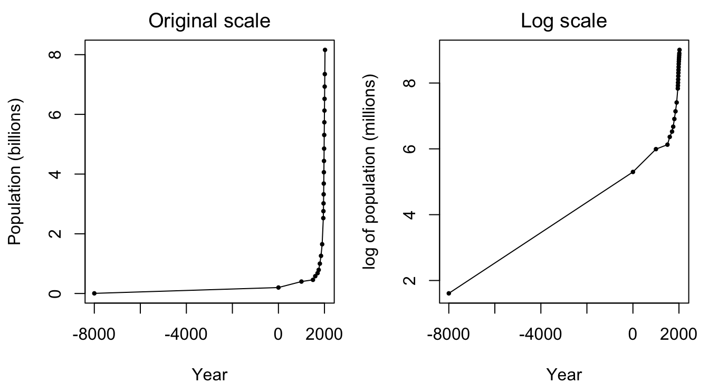
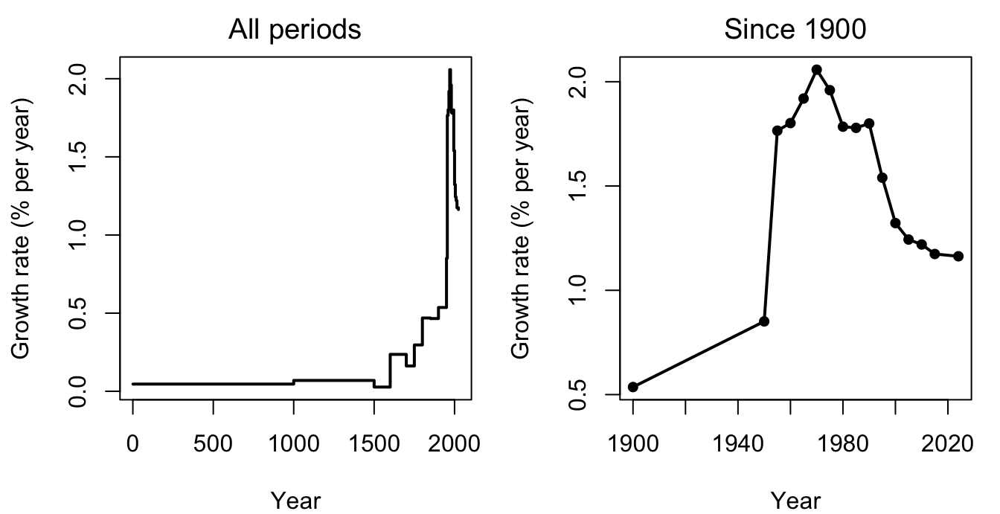
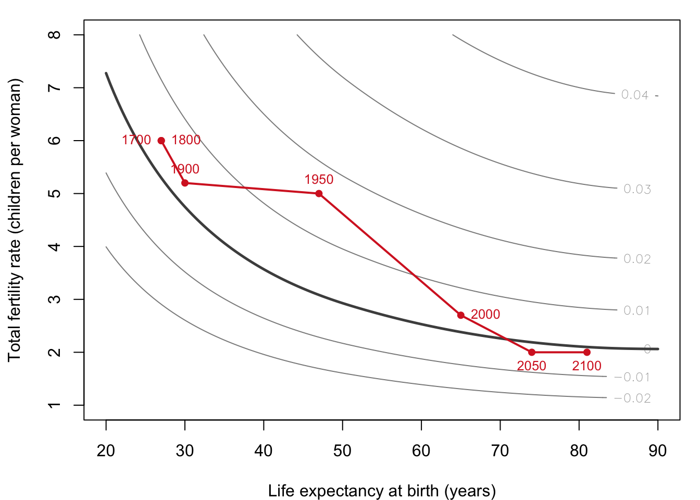
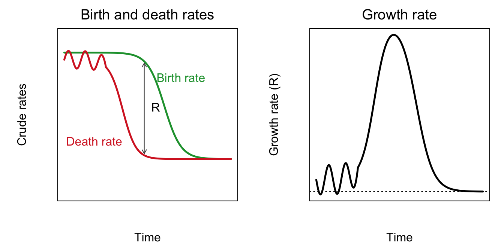
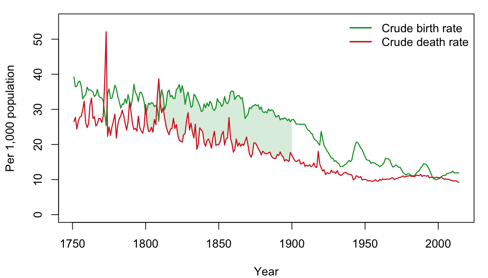

| Year | Population (millions) | Change (thousands per year) | Growth rate (% per year) |
|---|---|---|---|
| -8000 | 4 | 26 | 0.05 |
| 1 | 211 | -22 | -0.01 |
| 500 | 200 | 180 | 0.07 |
| 1000 | 290 | 366 | 0.10 |
| 1500 | 473 | 1,164 | 0.19 |
| 1750 | 764 | 21,264 | 0.83 |
| 2000 | 6,080 | 75,867 | 1.14 |
| 2015 | 7,218 |
1 Ten Thousand Years of Population
Draft: provenance notes (for review)
Margin tags mark material that is not in the course slides or lab. Added · from readings comes from the assigned readings (Livi-Bacci, CBO). Added · new is from outside the course materials (my framing, general knowledge, or my own analysis) and needs the closest check. Untagged material follows the 2025 slides (01–04) and Lab 1.
Added · new Bridge text written for the chapter split.
This chapter is about the facts: how many people there have been, how fast their numbers have grown, and why growth sped up and is now slowing. The next chapter, Chapter 2, uses the same course week’s material to ask a normative question: what size of population is best, and for whom?
1.1 What is economic demography?
Economic demography asks two kinds of questions. The first half of this course is about the consequences of population: how the number of people, and how fast that number changes, affects human welfare. The second half is about the causes of population change: the economic forces behind births, deaths, migration, marriage, and divorce.
Two news stories show what this looks like.
1.1.1 Example 1: China’s “looming crisis”
In January 2019, the New York Times ran the headline “China’s Looming Crisis: A Shrinking Population.” Four years later it reported that “China’s Population Falls, Heralding a Demographic Crisis”: deaths had outnumbered births for the first time in six decades.
If you grew up hearing that the world’s problem was too many people, this should raise some questions:
- What’s wrong with a shrinking population?
- What is the best population size? Best for whom?
- Why did population grow so much after 1950?
- What limited growth in earlier centuries?
- What will population change do to the environment?
- And to inequality?
These questions run through the whole course. Note also that China’s falling fertility is not just a story about the one-child policy. Population growth was slowing long before that policy, and has kept slowing since it ended. We return to China in Chapter 11.
1.1.2 Example 2: The immigration surge
In July 2024, the Congressional Budget Office (CBO), the nonpartisan agency that scores the federal budget for Congress, published an analysis of the recent surge in immigration to the United States.
Added · from readings Figures in this subsection are from the CBO report (2024), Summary and pp. 6, 19–21. The slides show CBO’s Figures 1–2 and Table 2.
CBO compared two scenarios. In its baseline, net immigration of the category it calls “other foreign nationals” averages 1.7 million a year from 2021 to 2026. In a counterfactual, it stays at the pre-2020 trend of 200,000 a year. The difference, the “surge,” is 8.7 million people. Counting their U.S.-born children, the U.S. population in 2034 is about 10 million people, or nearly 3 percent, larger with the surge than without it.
CBO’s headline findings:
- The federal budget. The surge lowers federal deficits by $0.9 trillion over 2024–2034. Immigrants in the surge pay $788 billion in income and payroll taxes. Benefits to them and their children add $177 billion to mandatory spending. The broader effects on the economy add more revenue than spending.
- The economy. Nominal GDP is $8.9 trillion higher over the decade. Most of that, $7.8 trillion, comes simply from having more people.
Should we conclude that the surge is “good for the economy”? Economic demography teaches us to ask for whom, and measured how. A few things to notice:
Added · new The per-capita comparison is my calculation from CBO’s numbers (real GDP +2.9% vs. population “nearly 3 percent” in 2034). It answers one of the discussion questions in your course calendar.
- Totals versus per capita. In 2034, real GDP is 2.9 percent higher because of the surge, and the population is nearly 3 percent larger. So GDP per person is roughly unchanged. A bigger economy is not the same as a richer population. Notice that CBO reports almost everything in totals.
- Short run versus long run. Through 2026, wage growth slows for workers with 12 or fewer years of education, because there are more workers with similar skills. Later, wage growth speeds up slightly for all groups, as overall productivity rises.
- Productivity can go both ways. At first, the surge lowers average productivity, because the new arrivals have, on average, less education and work experience. Over time, the 3 percent of surge adults who work in science and engineering are expected to raise productivity through innovation, with the biggest effect 5 to 15 years after arrival. By 2034, CBO estimates, the two effects roughly cancel out.
- Federal versus local. CBO’s estimates cover the federal budget only. It notes that research generally finds immigration raises state and local costs, especially for schools, more than state and local revenues.
The point is not that CBO is wrong. The report is careful and full of caveats. The point is that “Is immigration good for the economy?” breaks into many questions. There are perspectives to weigh: short term or long term, federal or local government, the whole economy or per capita, capital or labor, rich or poor, skilled or unskilled, producer or consumer. We take up immigration directly at the end of the course.
1.2 Measuring population growth
1.2.1 Absolute or proportional change?
Table 1.1 shows estimates of world population over the last 10,000 years.
There are two ways to describe change. We could count the absolute change, in persons per year. Or we could measure the proportional change, in percent per year. Demographers usually prefer proportional change, for several reasons:
- It is more constant over time.
- It connects naturally to individual behavior. Each person’s chance of having a child or dying produces a growth rate, not a fixed number of new people.
- The underlying process is multiplicative. (The Bible says “be fruitful and multiply,” not “be fruitful and add.”)
- It connects to the other models we’ll use, such as the Solow growth model.
But absolute change sometimes matters more. For the environment, for example, what counts may be the total number of people burning fuel, not the rate at which that number grows.
1.2.2 The exponential model
The standard model of proportional growth is exponential growth:
\[ N(t) = N(0)\, e^{Rt}, \]
where \(N(t)\) is the population at time \(t\) and \(R\) is the annual growth rate. Taking natural logarithms of both sides and rearranging gives a formula for the growth rate between any two dates:
\[ R = \frac{\log N(t) - \log N(0)}{t}. \]
(Throughout this book, “log” means the natural logarithm, which is what R’s log() function computes.) This formula has a simple picture: \(R\) is the slope of the graph of log population against time, its “rise over run.” For example, world population grew from 6,080 million in 2000 to 7,218 million in 2015, so
\[ R = \frac{\log(7218) - \log(6080)}{15} = 0.0114, \]
about 1.1 percent per year.
Added · new The “rule of 70” is not in your slides.
A handy rule of thumb: a population growing at \(R\) percent per year doubles in about \(70/R\) years. At 1 percent per year, it doubles in about 70 years. At 0.1 percent, it takes about 700 years.
1.2.3 Seeing growth
Figure 1.1 shows world population on the original scale and on a log scale, using the data from Lab 1.
Show the R code
op <- par(mfrow = c(1, 2), mar = c(4, 4.2, 2, 1))
plot(world$year, world$pop / 1000, type = "o", pch = 19, cex = 0.45, xaxt = "n",
xlab = "Year", ylab = "Population (billions)", main = "Original scale",
font.main = 1)
axis(1, at = seq(-8000, 2000, 2000))
plot(world$year, log(world$pop), type = "o", pch = 19, cex = 0.45, xaxt = "n",
xlab = "Year", ylab = "log of population (millions)", main = "Log scale",
font.main = 1)
axis(1, at = seq(-8000, 2000, 2000))
par(op)
On the original scale, nothing happens for ten thousand years and then population explodes. The log scale shows proportional change, and it tells a subtler story. For eight thousand years before the Common Era, log population rose by about 4, a slope of about 4/8000 = 0.0005: growth of about 0.05 percent per year. Since then, the slope has steepened again and again. Even the proportional rate of growth has accelerated.
Added · from readings Livi-Bacci 2017, pp. 6–7 and Table 1.1.
Livi-Bacci makes the same point with slightly different estimates. If world population was 252 million at the start of the Common Era and 771 million in 1750, average growth was only 0.06 percent per year. If the death rate averaged 40 per thousand, then the birth rate must have averaged about 40.6: births exceeded deaths by just 1.5 percent. For most of human history, he writes, “fertility and mortality must have remained in virtual equilibrium.” Since the 1960s, by contrast, births have exceeded deaths by 200 percent.
Figure 1.2 plots the growth rate in each interval.
Show the R code
R_world <- 100 * diff(log(world$pop)) / diff(world$year)
end_year <- world$year[-1]
op <- par(mfrow = c(1, 2), mar = c(4, 4.2, 2, 1))
plot(end_year, R_world, type = "s", lwd = 2,
xlab = "Year", ylab = "Growth rate (% per year)", main = "All periods",
font.main = 1)
s <- end_year >= 1900
plot(end_year[s], R_world[s], type = "o", pch = 19, cex = 0.7, lwd = 2,
xlab = "Year", ylab = "Growth rate (% per year)", main = "Since 1900",
font.main = 1)
par(op)
The history of human population thus has three phases:
- For most of human history, near-zero population growth.
- Then a period of accelerating growth.
- Most recently, slowing growth. The future of humanity may depend on how fast this slowing proceeds.
Explaining each phase is one of the goals of this course. Near-zero growth is the subject of Chapter 3. Accelerating and then slowing growth is the subject of the demographic transition, below.
In the lab
In Lab 1 you compute these growth rates yourself from the world population data, and use the exponential model to ask “what if” questions about the past and the future. The lab ends with an exercise on Sauvy’s optimum populations (Chapter 2).
Added · from readings Livi-Bacci 2017, pp. 26–27 and Table 1.1.
One more striking number from Livi-Bacci. Making “courageous” assumptions, demographers estimate that about 82 billion people had been born by the year 2000. The 6 billion alive in 2000 were thus about 7 percent of all the humans who have ever lived.
1.3 Generations, reproduction, and survival
1.3.1 Paying the “demographic debt”
Population growth is ultimately a matter of generations. Does each generation of parents raise enough children to replace itself?
Added · from readings The Bichi family and French Canadian examples are from Livi-Bacci 2017, pp. 7–9.
Livi-Bacci illustrates this with the descendants of Jacopo Bichi, a sharecropper near Florence who married Domenica Del Buono in 1667. Over three generations, five married couples of the family, ten spouses in all, raised nine children who in turn married. Ten breeders brought nine offspring to reproduction: a 10 percent decline per generation that, if repeated for long enough, would lead to the family’s extinction. Other families did better. The pioneers of French Canada, who settled the St. Lawrence Valley in the seventeenth century, raised an average of 4.2 married children per couple. That is a doubling in a single generation. Two pioneers, Jean Guyon and Mathurine Robin, had 2,150 descendants by 1730.
A population grows, shrinks, or stays the same depending on whether, on average, each generation more than replaces, fails to replace, or exactly replaces itself.
Try this (from class)
In lecture we simulate generational growth with the class itself. Each row is a generation. Each person computes the “per parent” growth implied by their own family (number of children in their parents’ family, divided by two), and the first row multiplies these together, row by row. Afterward, ask yourself: Is this a good estimate of the growth rate of your parents’ generation? What might be wrong with it?
1.3.2 Two measures: fertility and survival
Added · from readings The components of fertility in this subsection are from Livi-Bacci 2017, pp. 9–12.
Two summary measures capture reproduction and survival:
- The total fertility rate (TFR) is the average number of children a woman would have over her reproductive life at current birth rates, in the absence of mortality. It is the most common summary measure of fertility. Before the demographic transition it exceeded 6. In the United States it has recently fallen to about 1.6, and in South Korea in 2023 it was 0.72.
- Life expectancy at birth, \(e_0\), is the average number of years a newborn would live at current death rates.
What limits fertility in a society without birth control? Livi-Bacci breaks it into two parts. The first is the interval between births, which is made up of a period of infertility after each birth (longer when mothers breastfeed longer), the waiting time to conceive, nine months of pregnancy, and time lost to miscarriage. Together these give intervals of 1.5 to 3.5 years, usually 2 to 3. The second is the span of the reproductive period actually used. That runs from marriage, which may be as early as 15 or later than 25, to the end of fecundity, with mothers’ average age at last birth around 38 to 41. Combining the extremes gives between 4.3 and 16.7 children per woman. In practice, averages below 5 or above 8 are rare. The two biggest levers are the age at marriage and the length of breastfeeding. Hold onto the first: it is Malthus’s preventive check.
Survival matters too, because a woman who dies young cannot have her children. Livi-Bacci shows that when life expectancy at birth is 20 years, only about 29 percent of a generation’s potential reproductive life is actually lived. At an \(e_0\) of 50 it is 71 percent, and at 83 it is 98 percent. If women would have 6 children each in the absence of mortality, high mortality cuts that to about 1.8 children per woman born.
1.3.3 From TFR to growth rate
To turn the TFR into a growth rate, we need three adjustments:
- Sex. Only daughters go on to have children. About 48.86 percent of births are girls.
- Mortality. Only daughters who survive to childbearing age have children. Survival to about age 30 is a good summary.
- Generation length. Growth per generation must be converted to growth per year. A generation is about 30 years.
A good approximation is
\[ R \approx \frac{\log\left[\text{TFR} \times 0.4886 \times \text{survival to age 30}\right]}{30}. \]
For example, with a TFR of 4 and survival to age 30 of 0.7, each woman is replaced by 4 × 0.4886 × 0.7 = 1.37 surviving daughters, and \(R \approx \log(1.37)/30 \approx 0.01\), or 1 percent per year.
1.3.4 The space of growth
Added · new The figure is my construction, after your slide 02-31 and Livi-Bacci’s Figure 1.8. I approximate survival to 30 from \(e_0\) with a smooth curve through Livi-Bacci’s three values (29%, 71%, 98%), plus endpoints I chose at \(e_0\) = 15 and 95, and use your growth formula. The discussion of age structure in the last paragraph is mine.
Every combination of TFR and life expectancy implies a growth rate. Figure 1.3 draws curves of equal growth, “isogrowth” curves, and traces the path of world population from 1700 to 2100 using estimates and projections from Ronald Lee (Table 1.2).
| Year | Life expectancy (years) | TFR | Population (billions) | Growth rate (% per year) |
|---|---|---|---|---|
| 1700 | 27 | 6.0 | 0.68 | 0.50 |
| 1800 | 27 | 6.0 | 0.98 | 0.51 |
| 1900 | 30 | 5.2 | 1.65 | 0.56 |
| 1950 | 47 | 5.0 | 2.52 | 1.80 |
| 2000 | 65 | 2.7 | 6.07 | 1.22 |
| 2050 | 74 | 2.0 | 8.92 | 0.33 |
| 2100 | 81 | 2.0 | 9.46 | 0.04 |
Show the R code
surv_of_e0 <- splinefun(c(15, 20.7, 50.8, 83, 95), c(0.20, 0.292, 0.708, 0.982, 0.995),
method = "monoH.FC")
e0_grid <- seq(20, 90, 0.5); tfr_grid <- seq(1, 8, 0.05)
Rmat <- outer(e0_grid, tfr_grid, function(e, f) R_approx(f, surv_of_e0(e)))
op <- par(mar = c(4, 4.2, 1, 1))
contour(e0_grid, tfr_grid, Rmat, levels = seq(-0.02, 0.04, 0.01),
col = "grey55", labcex = 0.8, drawlabels = TRUE,
xlab = "Life expectancy at birth (years)",
ylab = "Total fertility rate (children per woman)")
contour(e0_grid, tfr_grid, Rmat, levels = 0, lwd = 2.5, col = "grey30",
add = TRUE, drawlabels = FALSE)
lines(lee$e0, lee$tfr, col = col_d, lwd = 2, type = "o", pch = 19, cex = 0.7)
text(lee$e0, lee$tfr, lee$year, col = col_d, cex = 0.8,
pos = c(2, 4, 3, 3, 4, 1, 1))
par(op)
The thick curve is zero growth. Before 1900, the world sat in a narrow band just above it, with low life expectancy and high fertility. Livi-Bacci notes that pre-modern populations nearly all lived in the band between 0 and 1 percent growth, though they got there in different ways. Denmark at the end of the eighteenth century combined a life expectancy of about 40 with just over four children per woman. India a century later combined a life expectancy of about 25 with just under seven. During the twentieth century, life expectancy rose first, carrying the world far above the zero line, before fertility fell and brought it back down.
One caution. The curves show the long-run growth rate that a combination of fertility and mortality would eventually produce. Actual growth in a given year also depends on the population’s age structure. In 2000, the world’s TFR of 2.7 implies long-run growth of only a few tenths of a percent per year. Actual growth was 1.2 percent, because the world’s population was young, with many people of childbearing age. That momentum takes decades to work itself out.
1.3.5 Environmental constraints
Added · from readings This subsection summarizes Livi-Bacci 2017, pp. 2–5 and 19–24. Your slides don’t cover it.
Why did population grow so slowly for so long? Livi-Bacci begins with biology. Species follow different reproductive “strategies.” r-strategists (insects, fish, small mammals) have many offspring and invest little in each, and their numbers swing violently. K-strategists (large mammals, including humans) have few offspring, invest heavily in each, and stay in more stable balance with their environment. Humans are an extreme K-strategy species.
Within that biology, the environment sets limits. Hunter-gatherers lived at densities of about 0.1 to 1 person per square kilometer, limited by the plants and animals available within a day’s walk. Agriculture raised the limit enormously. By the mid-eighteenth century, the major European countries had 40 to 60 people per square kilometer, about 100 times the density of hunter-gatherers. But farming still depended on plants and animals for energy, and so ultimately on land. Hunter-gatherers used about 5,000 calories of energy per person per day, and farming societies never more than about 12,000 to 26,000. The industrial revolution broke the link between energy and land: early industrial societies used about 70,000 calories per person per day, and some today use more than 200,000.
So each great technological era, hunting and gathering, agriculture, and industry, raised the ceiling on human numbers. Population then grew toward the new ceiling and slowed as it approached it. This is the idea, common to animal biology and to Malthus, that growth slows as density rises. We develop it in the next chapter.
1.4 The demographic transition
1.4.1 Crude rates
The simplest measures of births and deaths are the crude birth rate, annual births divided by population, written \(b\), and the crude death rate, annual deaths divided by population, written \(d\). (“Crude” because the denominator is everyone, men and women, young and old.) Without migration, the growth rate is just
\[ R = b - d. \]
Typical values: about 40 deaths per thousand per year in ancient Rome, about 10 in modern Japan, and about 8 in the modern United States. (Is it really more dangerous to be born in Japan than in the United States? Think about age structure.)
1.4.2 A puzzle, seen from the 1970s
Today the demographic transition can seem obvious: birth and death rates used to be high, and now both are low. But put yourself in the position of an observer in the 1970s. World population growth had been accelerating for centuries. Energy prices were skyrocketing, environmental worries were rising, and economic growth was slowing. If you saw the sequence 1, 1, 1, 1, 2, 3, what number would you predict next?
Predicting the future requires understanding the system that produces births and deaths. Perhaps both depend on income: \(b(y)\) and \(d(y)\). Perhaps both depend on population size: \(b(N)\) and \(d(N)\). Perhaps mortality changes for its own reasons, and fertility responds to mortality: \(b(d)\). The next several chapters explore these possibilities.
1.4.3 An idealized picture
Figure 1.4 shows the demographic transition in its idealized form.

- Before the transition: high fertility and high mortality. Mortality fluctuates with random shocks such as epidemics and harvest failures.
- During the transition: mortality falls first, and the decline in fertility lags behind. The gap between them produces transitional growth.
- After the transition: fertility finally falls too. Now the fluctuations in growth come from fertility, and fertility may fall below replacement.
Some typical numbers. Before the transition, the TFR exceeds 6, and life expectancy is about 40 to 50 years or less. In Korea in 1950, the crude birth rate was 37 per thousand and the death rate 32, for growth of half a percent. During the transition, growth rates reached 1 to 2 percent in historical Europe and 3 to 4 percent in Africa. In Iraq in 1985, the birth rate was 42 per thousand and the death rate 8, for growth of 3.4 percent. After the transition, the TFR is around 2 (or 2.5, or 1.5), life expectancy is 70 or 80, and growth is near zero. Belgium in 1984 had a birth rate of 12 per thousand and a death rate of 11.
1.4.4 Sweden
Figure 1.5 shows the transition in Sweden, using the Human Mortality Database data we use in Lab 2. (In lecture we compare Sweden with Mexico, where the transition came later and was much faster.)
Show the R code
op <- par(mar = c(4, 4.2, 1, 1))
plot(swe$year, swe$cbr, type = "n", ylim = c(0, 55),
xlab = "Year", ylab = "Per 1,000 population")
s <- swe$year %in% 1800:1900
polygon(c(swe$year[s], rev(swe$year[s])), c(swe$cbr[s], rev(swe$cdr[s])),
col = adjustcolor(col_b, 0.18), border = NA)
lines(swe$year, swe$cbr, col = col_b, lwd = 1.5)
lines(swe$year, swe$cdr, col = col_d, lwd = 1.5)
legend("topright", c("Crude birth rate", "Crude death rate"),
col = c(col_b, col_d), lwd = 2, bty = "n")
par(op)
area <- sum((swe$B[swe$year %in% 1800:1899] - swe$D[swe$year %in% 1800:1899]) /
swe$N[swe$year %in% 1800:1899])
ratio <- swe$N[swe$year == 1900] / swe$N[swe$year == 1800]
Sweden’s death rate began a long, slow decline in the late eighteenth century. The birth rate stayed high until the 1870s and then fell, reaching death-rate levels by the 1930s. The gap between them, the shaded area, is transitional growth.
There is a neat way to use such a picture. Because growth rates add up on the log scale, the total growth over a period is \(e\) raised to the sum of the annual growth rates, which is the area between the birth and death curves. For Sweden from 1800 to 1900, that area is about 0.97, which implies the population should have multiplied by \(e^{0.97} \approx 2.65\).
Added · new The emigration explanation is my addition. The numbers are computed from the HMD data. Note: slide 02-27 lists “Sweden 1900 2.3 million, 2000 5 million.” The HMD has 2.35 million in 1800 and 5.10 million in 1900, so the slide’s years look like they should be 1800 and 1900.
In fact, Sweden grew from 2.35 million in 1800 to 5.1 million in 1900, a factor of only 2.17. Where did the missing growth go? Births minus deaths leaves out migration, and nineteenth-century Sweden sent large numbers of emigrants to the United States. The formula \(R = b - d\) holds only for a closed population.
1.4.5 The world
Return to Table 1.2. World life expectancy rose from 27 years in 1800 to 65 in 2000, and is projected to reach 81 by 2100. The TFR fell from 6 to 2.7 and is projected to reach 2. Growth peaked at about 1.8 percent per year around 1950 and is projected to approach zero by 2100. On Figure 1.3 you can see the transitional growth as the excursion above the zero-growth line, and you can see how growth depends jointly on life expectancy and fertility.
The stylized facts we want to explain, then, are stationarity → transitional growth → stationarity (?). The next chapter asks a normative question: what population size is optimal, and for whom? Chapter 3 then turns to Malthus, his “trap,” and why neither population nor the economy grew much for thousands of years.
1.5 Key ideas
- Economic demography studies the consequences of population for welfare and the causes of population change. Totals and per-capita measures can tell very different stories.
- Population growth is best measured proportionally. In the exponential model, the growth rate is the slope of log population: \(R = [\log N(t) - \log N(0)]/t\).
- Human history has three phases: near-zero growth for millennia, accelerating growth, and recently slowing growth.
- Growth depends on fertility (TFR) and survival: \(R \approx \log(\text{TFR} \times 0.4886 \times \text{survival to 30})/30\).
- In the demographic transition, mortality falls first and fertility follows, producing a temporary burst of growth.
1.6 Check your understanding
Added · new Q3 comes from your slide 02-18. The rest are new and avoid the Lab 1 graded questions.
Doubling times. Use Table 1.1 to compute how long it took world population to double at the growth rates of 1000–1500 and of 1750–2000.
Absolute versus proportional. World population grew by more people per year from 1750 to 2000 than in any earlier period, and it will likely continue adding tens of millions a year even as the growth rate falls. Give one question for which the absolute number matters more than the rate, and one for which the rate matters more.
Nigeria. In 2010, Nigeria’s TFR was about 6 and survival to age 30 about 0.8. Use the approximation to estimate its growth rate. How long would it take to double?
Per capita. CBO projects that the immigration surge raises GDP by 2.9 percent in 2034. What other number do you need to judge whether the average U.S. resident is better off, and where in the report would you find it?
Migration and growth. Explain why the area between Sweden’s birth and death curves overstates its population growth in the nineteenth century. Would the same be true for the United States in the same period? Why or why not?
1.7 Further reading
- Livi-Bacci, Massimo. 2017. “The Space and Strategy of Demographic Growth.” Chapter 1 of A Concise History of World Population, 6th ed. Wiley. Pages 1–27. A broad overview mixing biology, economics, and demography. It sets the stage for Malthusian constraints and the growth theories later in the course.
- Congressional Budget Office. 2024. “Effects of the Immigration Surge on the Federal Budget and the Economy.” July. Optional. As you read: Which results would you want to see per capita? Why doesn’t CBO present things that way? Why does the surge first lower and then raise productivity?